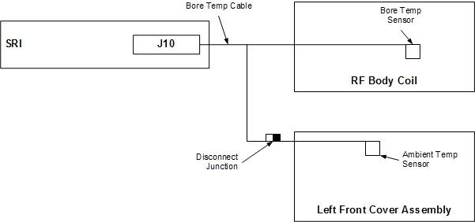
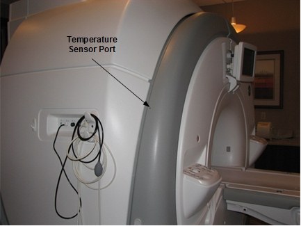
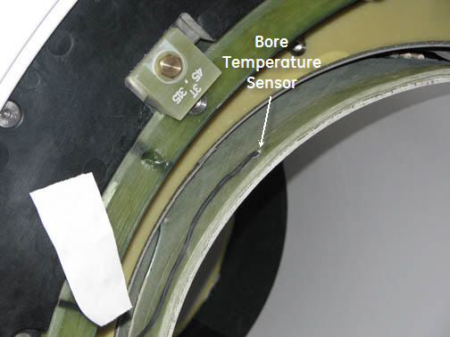

Operating Documentation
Direction 5670000, Rev# 1
Optima MR450w 1.5T Service Methods
Module Version 9.0, Version Date 12/8/09
Operating Documentation |
| Required Persons | Preliminary Reqs | Procedure | Finalization |
|---|---|---|---|
| 1 person for each sensor replacement procedure | Not Applicable | 5 hours for Bore Temperature Sensor and 1 hour for Room Ambient Temperature Sensor | 10 mins |
This procedure describes the replacement of the two temperature sensors associated with the magnet. For MR450w systems, the Room Ambient Temperature sensor is located in the left front cover. The Patient Bore Temperature Sensor is located inside the RF Body Coil. The Bore Temperature Cable connects to the Room Ambient Temperature Sensor, and the Patient Bore Temperature Sensor connects to the SRI. The Room Ambient Temperature Sensor and Cable plug into the Bore Temperature Cable (see Illustration 1). The Room Ambient Temperature Sensor is clamped into the left cover, so the sensor can be replaced without replacing the cover.
Illustration 1: Room Ambient and Bore Temperature Sensors

| Item | Qty | Effectivity | Part# | Manufacturer | |
|---|---|---|---|---|---|
| Non-Magnetic Service Tools | 1 | - | 5112581 | - | |
| Digital Volt Meter (DVM) | 1 | - | - | - | |
| Item | Qty | Effectivity | Part# | Manufacturer | |
|---|---|---|---|---|---|
| Bore Temperature Cable and Sensor (Run 3350, MAG-SRI-J10 to Mag-Bore, Bore Temp Sensor) | 1 | - | See FRU Manual | - | |
| Room Ambient Temperature Sensor | 1 | - | See FRU Manual | - | |
| Condition | Reference | Effectivity |
|---|---|---|
No required conditions. | - | - |
Follow Lockout/Tagout procedures per LOTO for RF and PEN Cabinets and Magnet Room Electronics.
Remove the side cover and left skirt cover. See and Side Cover Removal and Install and Skirt Cover Removal and Install.
Remove the front cover. See Front Cover Removal and Installation.
Disconnect the Room Ambient Temperature Sensor from the Bore Temperature Sensor cable. The Room Ambient Temperature Sensor cable is approximately 72 inches (1800 mm) long, and the connector should be near the bottom of the front left cover. See Illustration 2.
Illustration 2: Location of Room Ambient Temperature Sensor

Loosen the set screw holding the Room Ambient Temperature Sensor to the front cover, and then remove the sensor.
Follow Lockout/Tagout procedures per LOTO for RF and PEN Cabinets and Magnet Room Electronics.
Remove the left side cover, left skirt cover, and front cover to access the quick disconnect. See Side Cover Removal and Installation, Skirt Cover Removal and Install and Front Cover Removal and Installation.
Disconnect the Bore Temperature Sensor Cable from J10 on the SRI on the left side of the magnet enclosure and pull to the front of the magnet.
Disconnect the Room Ambient Temperature Sensor Cable. The Room Ambient Temperature Sensor Cable is approximately 72-inches (1800 mm) long and the connector should be near the bottom of the Left-Front Cover. See Illustration 2.
Remove the Split Bridge (see Bridge Removal and Replacement).
Remove the Front End Bell (see Front End Bell Removal and Install).
| NOTE: | As long as the rear-end bell is in place and the RF body coil is returned into bore in same orientation as it was removed, then RF coil tuning will not be affected. It may be necessary to mark the original body coil position. |
Partially remove the RF Body Coil (see RF Body Coil Replacement).
Carefully remove the tape located underneath the sensor. Be sure to retain the tape so that it can be reused later.
Pull the sensor from the RF Body Coil port.
Remove the Bore Temperature Sensor Cable by threading through the magnetic enclosure.
Route the new cable through the magnet enclosure and tape to the RF Body Coil at the 315 position (see Illustration 3). Re-connect the Bore Temperature Sensor Cable at J10 on the SRI under left side of magnet enclosure and re-connect the Room Ambient Temperature Sensor Cable.
Illustration 3: Bore Temperature Sensor Cable

Insert the Bore Temperature Sensor into the port in the RF Body Coil and secure with tape.
Illustration 4: RF Body Coil Port

Perform a quick head and body scan to ensure that the system is functioning properly.